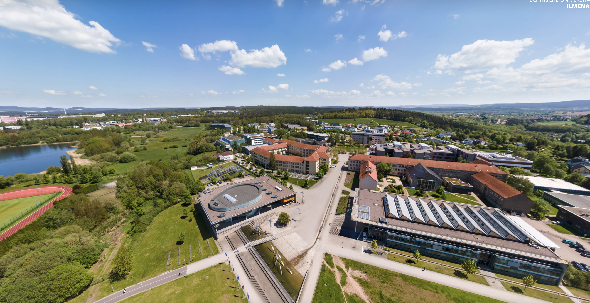

Im Rahmen meines Praktikums im Rechenzentrum der Technischen Universität Ilmenau konnte ich wertvolle Erfahrungen in den Aufgabenbereichen eines Fachinformatikers für Systemintegration sammeln. Unter der Anleitung von Herrn Jörg Deutschmann eignete ich mir praktische Kenntnisse in den Bereichen Serveradministration, Netzwerksicherheit und Webentwicklung an. Das Praktikum war abwechslungsreich, technisch anspruchsvoll und hat mir große Freude bereitet.
Deprovisionierung des Servers
Ubuntu installiert
Apache-Webserver installiert
Website aufgesetzt
Firewall konfiguriert
SSL Verschlüsselung eingerichtet
Website angepasst
Serverraum besichtet
Website verbessert
Meeting zur installation von AppsAnywhere
WordPress installiert
Meeting zur Vision und Mission des UniRz
Weiterarbeit an der Webseite
Server wiederhergestellt, WordPress neu installiert
Mehrere Meetings
Besprechung mit der Vizepräsidentin für Bildung
Gespräch über Ausbildungsmöglichkeiten im Rechenzentrum
Fahrt mit CAMIL durch Ilmenau
WordPress IP-Konfiguration durchgeführt